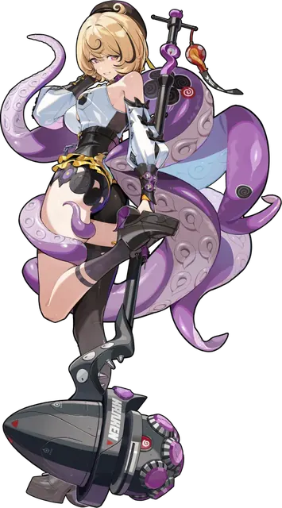

Yidhari171 cm · 5'7.2"
bust95
waist69
hips71
79.3
bust cm
46
waist cm
87.3
hip cm
22H
UK
TallUK 22Hwaist Fullerhips Widethighs ThickHourglassTop-heavy
Yidhari measures 171 cm (5'7.2"), above the roster average at 13th tallest of 50. Her 79.3 cm bust (UK 22H) is among the largest bust measurements on the chart. The waist comes in at 46 cm (waist-to-height 0.27), a fuller midsection than most of the roster. Below that, wide hips (87.3 cm) pair with thick 51.5 cm thighs (mid-pack for the roster by thigh circumference). Put together, she reads as an hourglass silhouette (bust/waist 1.72, hip/waist 1.90, bust–hip balance 91%): the bust ranks higher in the roster than the hips.